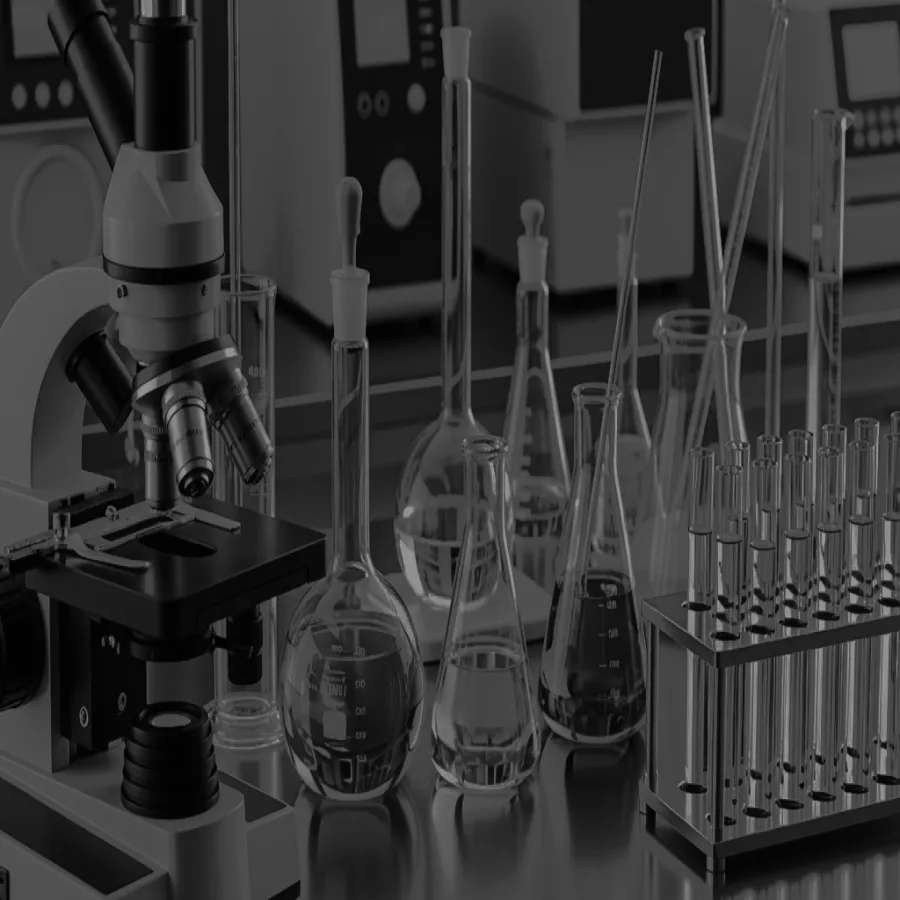
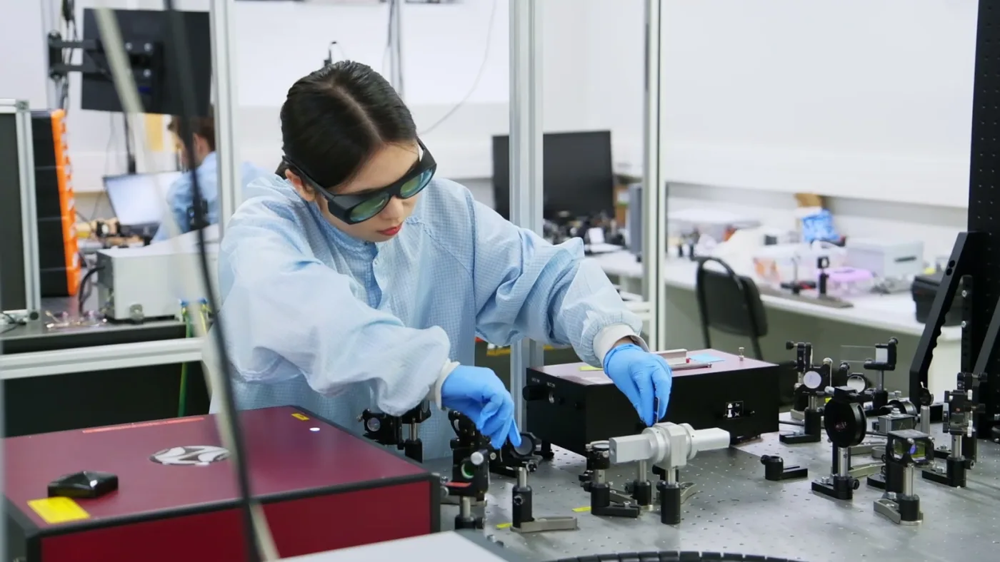

Реверс-инжиниринг оптического оборудования
- Входное тестирование и деконструирование
- Анализ материалов и свойств
- Построение CAD-моделей и цифровых двойников
- Реверс оптомеханики, электроники и ПО
ЦМТ «Мост» — центр междисциплинарных технологий физического факультета Университета ИТМО
написатьцентр, где научные идеи доводятся до практических
R&D-решений и интегрируются в образование
41 человек
работает над научными, образовательными и технологическими проектами центра
>200 публикаций
опубликовано сотрудниками центра в высокорейтинговых журналах
10 лет
ведется научно-образовательная деятельность центра (с 2015 года)
работаем на стыке фундаментальной и прикладной направленности
от технического задания до готового продукта: реверс-инжиниринг, разработка технологий и производство микро- и наноструктур


Образовательный трек «Гибридные материалы»
Программа магистратуры «Современные квантовые и нанофотонные
системы / Advanced Quantum and Nanophotonic Systems».
Главный акцент трека — междисциплинарные исследования,
поэтому мы ждем студентов с разным бэкграундом
(физиков, химиков, материаловедов, биологов), которые хотят
заниматься исследованиями на стыке наук. В рамках этого трека
вы познакомитесь с основами численного моделирования,
материаловедения, экспериментальной нанофотоники,
а также со специальными разделами органической химии
и клеточной биологии.
код направления
16.04.01
Техническая физика
язык обучения
Английский
Форма · срок
Очная
2 года